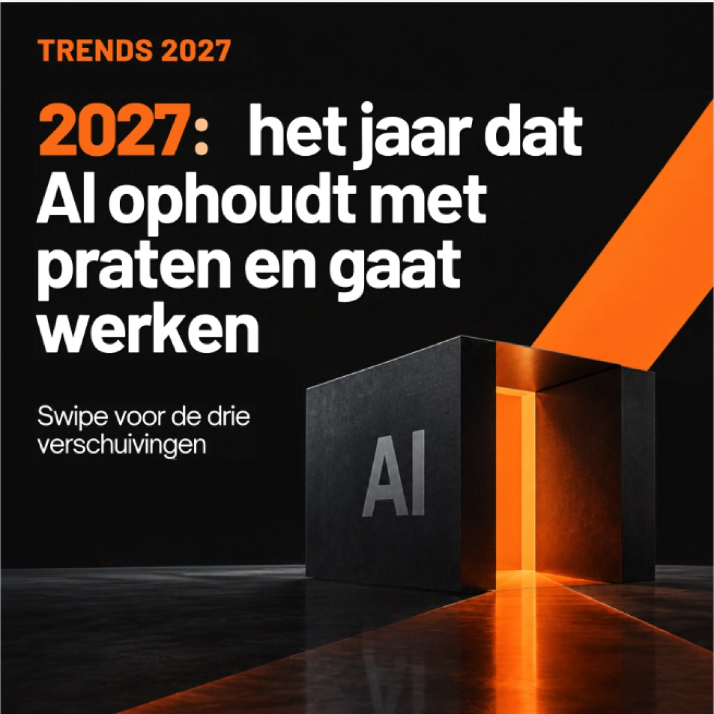
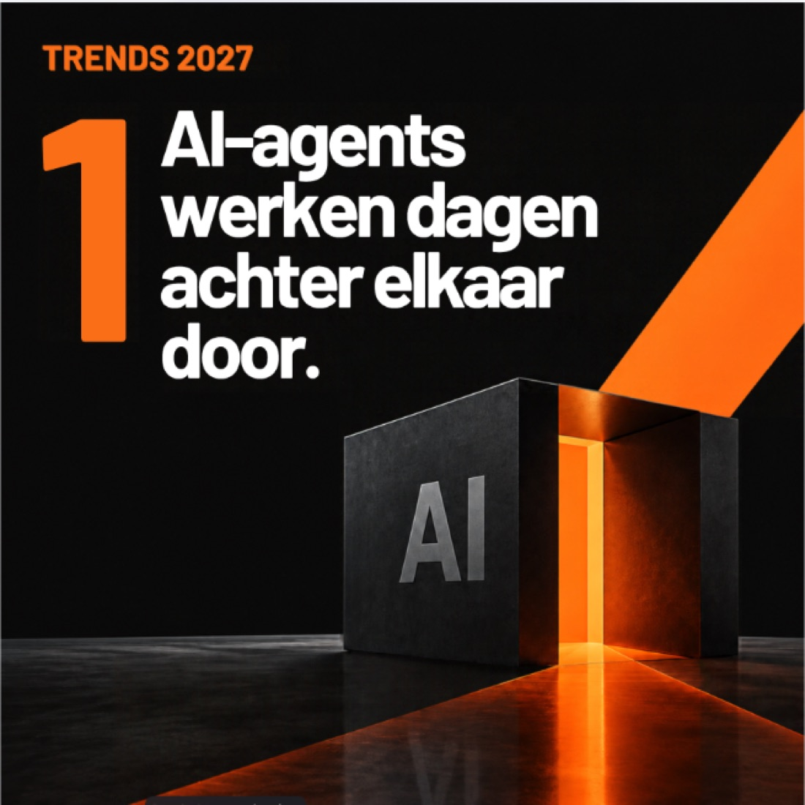
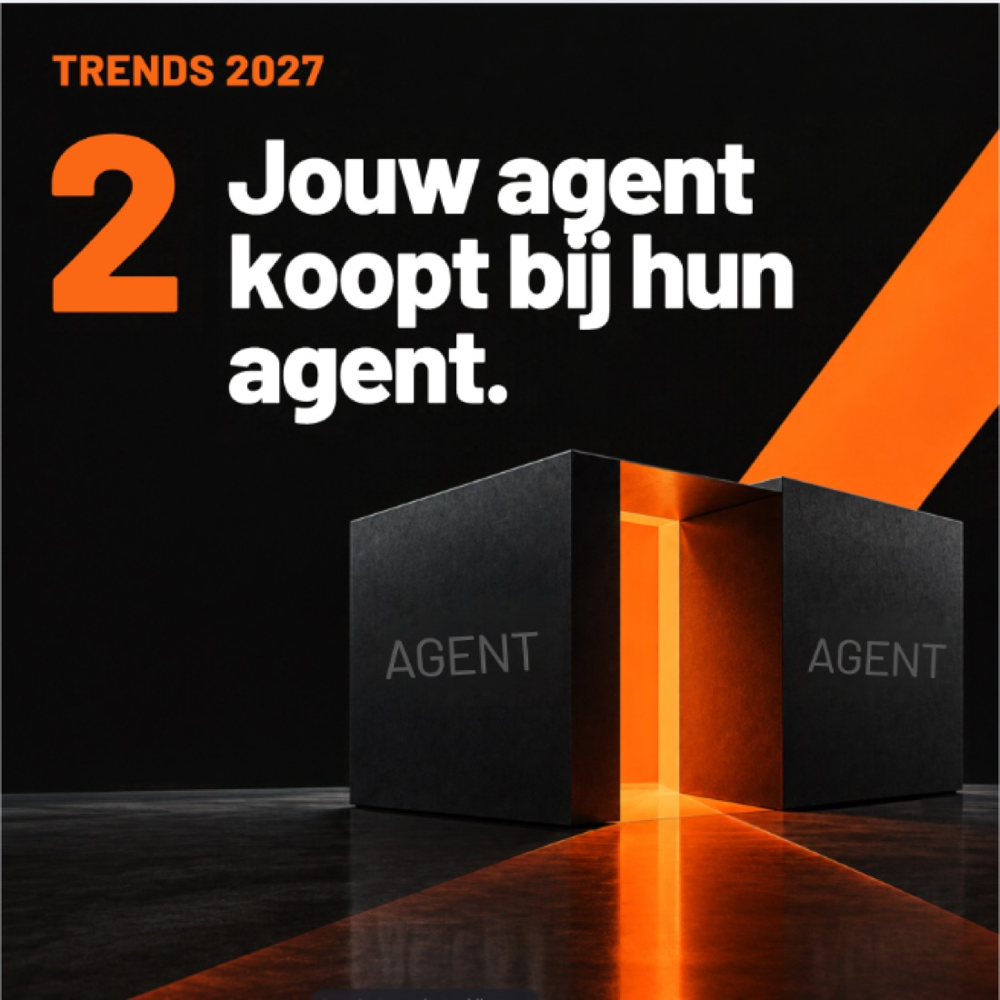
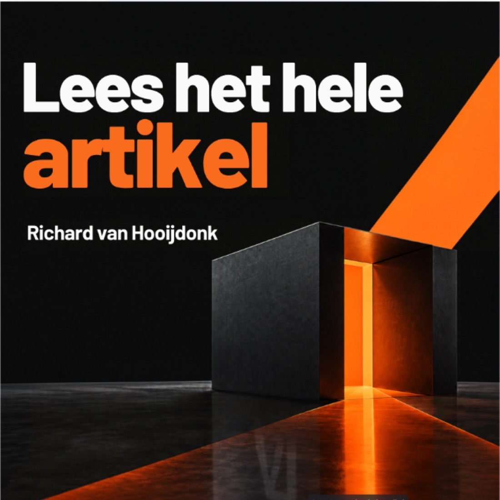
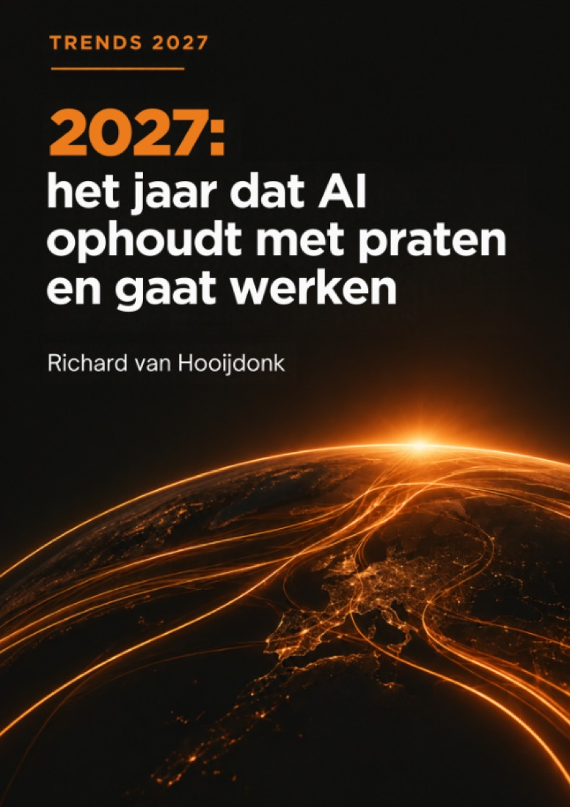
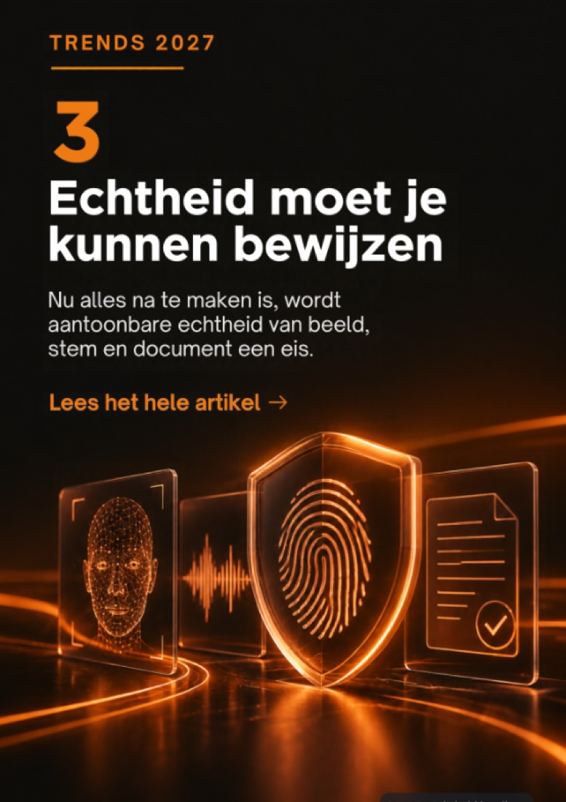

PROEF 27 NOVEMBER 2026
Besluit: Creatomate voor video, Canva voor de rest
Besluit Richard 27-11: video via Creatomate, alle andere uitingen via Canva. E-book: binnenwerk automatisch gezet, cover in Canva.
Video: Creatomate (besluit Richard 27-11)
Alle video's gaan via Creatomate: shorts, explainers en video bij artikel en story.
Creatomate
- Echte beweging: clips, zoom, overvloeiers, inschuivende tekst
- Volledig automatisch, met editor om zelf aan te passen
- Stockbeeld past minder goed bij de tekst dan Canva
Waarom
- Mooiste typografie en vloeiendste beweging (oordeel Richard)
- Editor om zelf aan te passen, en volledig te sturen via de API
- Astra en Gemini kozen onafhankelijk ook Creatomate
Social post (4:5): Canva
Canva
Let op
- Canva zette een eindpunt achter de kop. De tekst moet na Canva altijd letterlijk worden gecontroleerd.
Infographic (staand): Canva
Canva

Let op
- Formaat werd smaller dan gevraagd (1080x1920).
LinkedIn-carrousel (5 dia's): Canva





- Fout op dia 4: "2027:" in plaats van "3" (de 3 zit in het beeld)
E-book (A4, 5 pagina's): Canva




- Binnenpagina's werden donker in plaats van wit
Gereedschap per onderdeel
| Onderdeel | Gereedschap | Stand |
|---|---|---|
| Artikel en nieuwsbrief | WordPress (blog), beehiiv (nieuwsbrief) | Beide gekoppeld |
| Social, carrousel, infographic, e-book, slides | Canva | Gekozen; koppeling naar het board wordt gebouwd |
| Video, shorts, explainers | Creatomate | Gekozen; koppeling naar het board wordt gebouwd |
| Voiceover bij video | ElevenLabs | Koppeling klaar, wacht op sleutel; inspreektekst voor je stem staat klaar |
| Introtekst en plaatsen | Metricool | Per uiting een introtekst ter goedkeuring; plaatsen pas na jouw akkoord |
| NIEUW: audioversie van artikelen | ElevenLabs | Na de stemkeuze |
| NIEUW: clips uit keynote-opnames | OpusClip | Proef mogelijk |
| Interactieve grafiek (alleen als nodig) | Datawrapper | Account staat; anders eigen Podium-cijferkaart |
Volgorde in het proces
- Kies het item. Starten kan met een artikel, maar ook met een social post, video of ander onderdeel.
- Start je met een artikel: eerst artikel en nieuwsbrief, dan jouw akkoord.
- Daarna eerst de teksten voor de andere onderdelen, inclusief de introtekst voor Metricool, en weer jouw akkoord.
- Pas dan de productie, met jouw akkoord op het eindresultaat.
- Plaatsen via Metricool, pas na jouw akkoord per post.